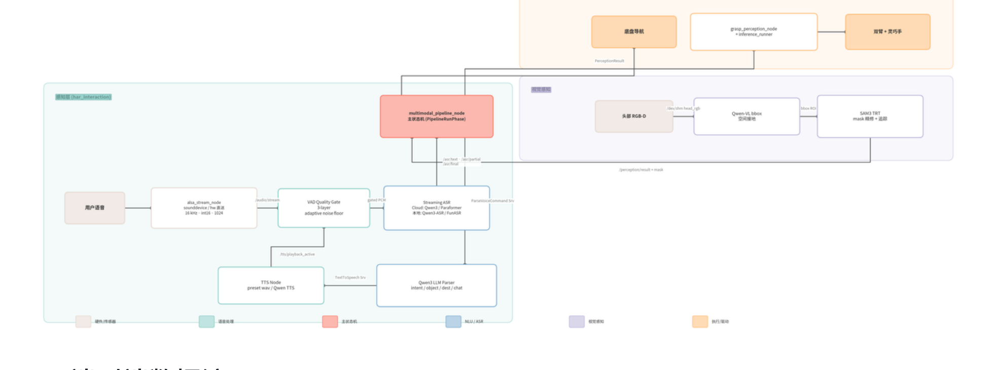
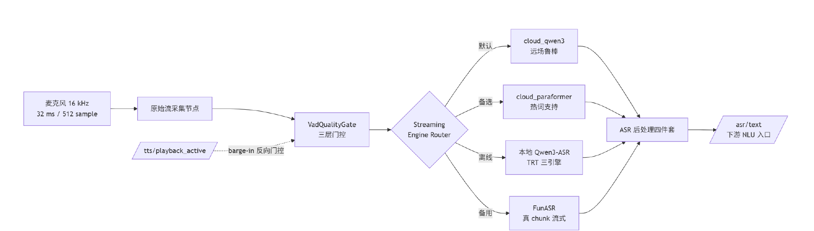
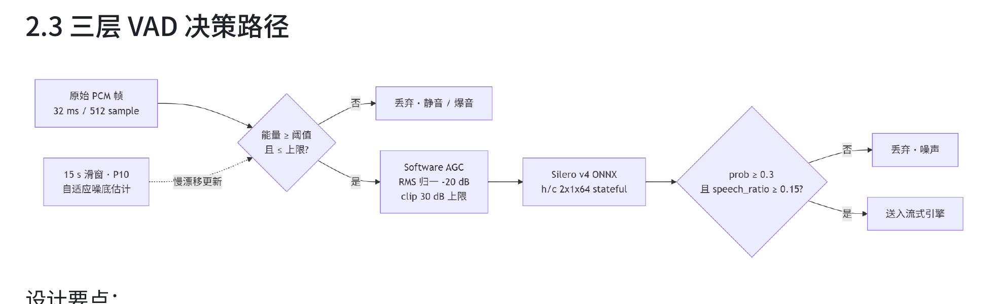
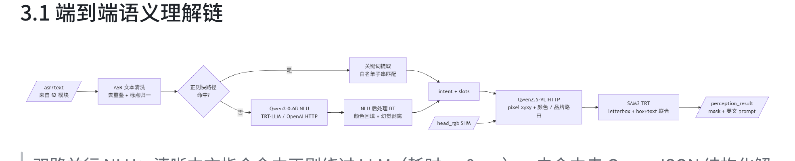
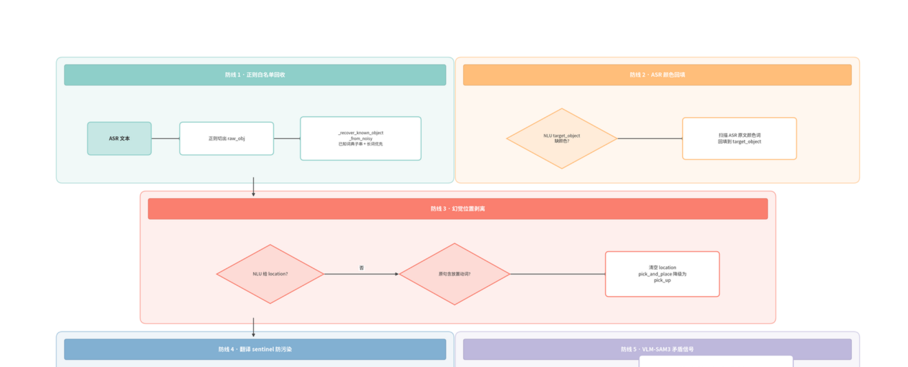
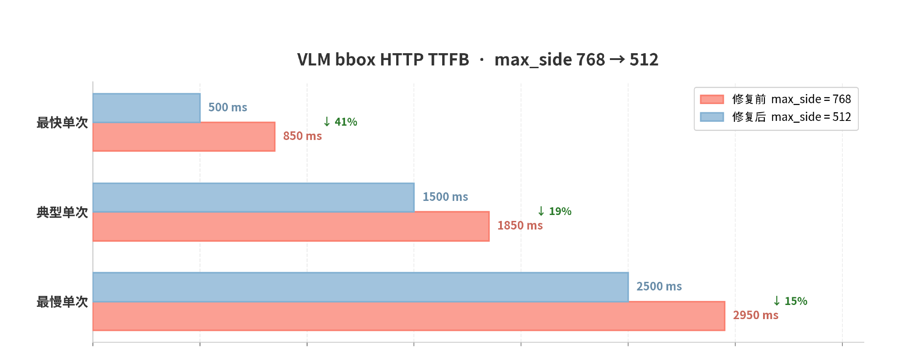
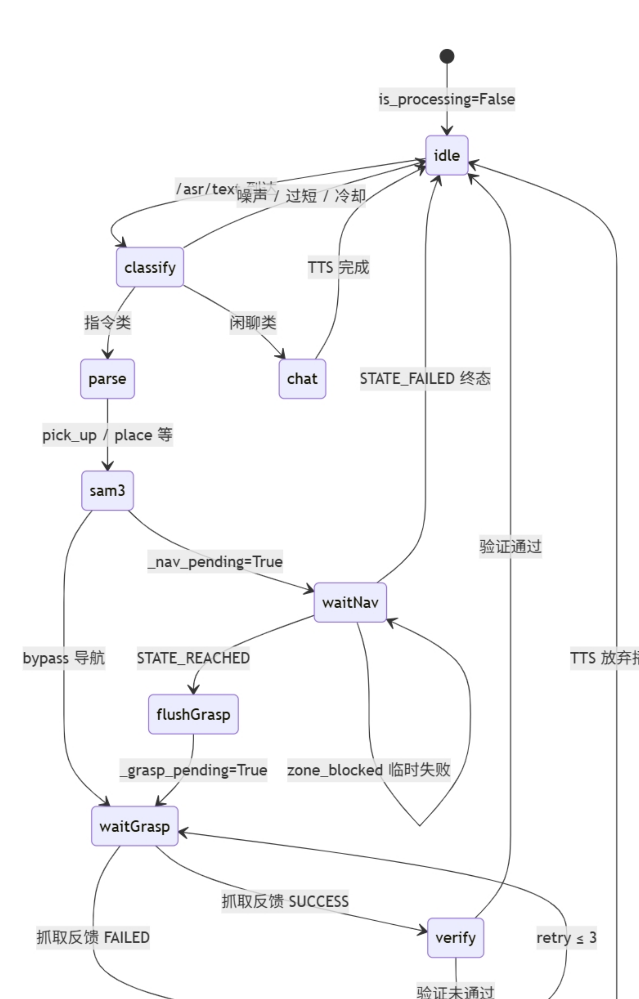
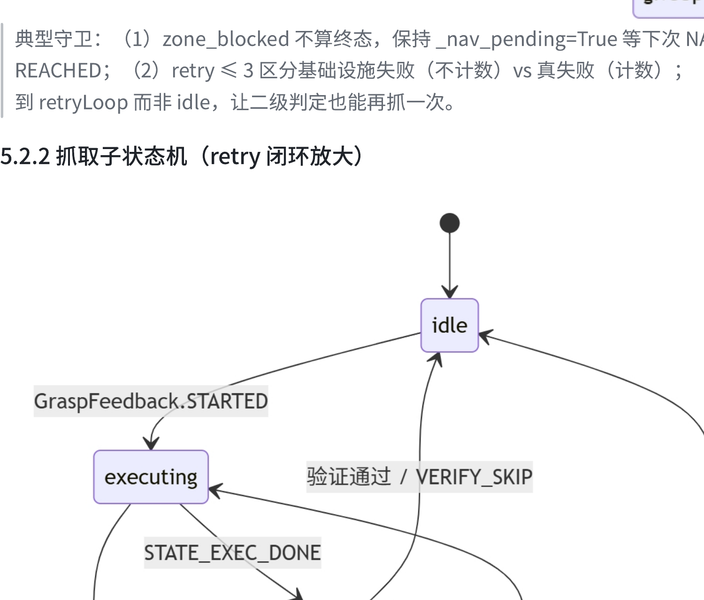
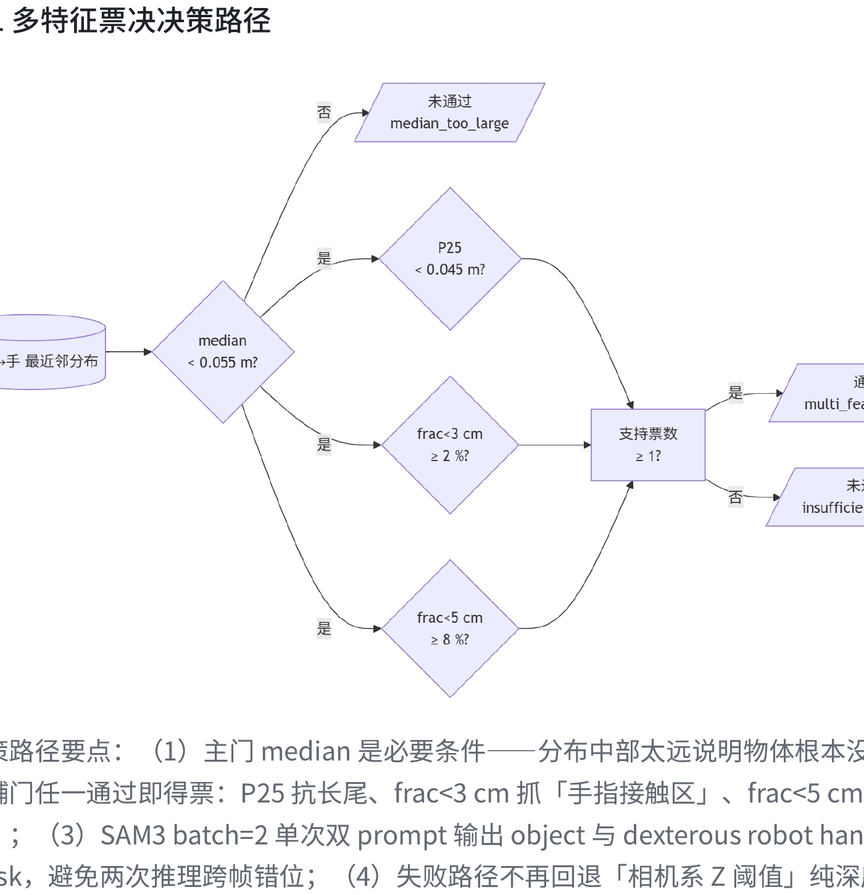
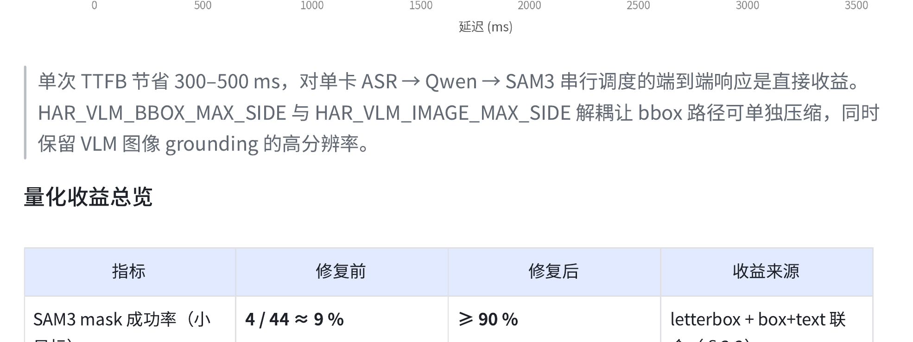

PLAN-B: Multimodal Perception & Closed-Loop Grasping for Humanoid Robot
Yueyi Chen · Algorithm Intern · Jetson AGX Orin · 2026.03 – 2026.05
A full-stack multimodal human–robot interaction system deployed on Jetson AGX Orin, covering the complete closed loop: Speech → Semantics → Perception → Planning → Execution → Verification. I owned the perception & integration layer — VAD/ASR tuning, NLU pipeline, VLM-SAM3 grounding, closed-loop state machine, and 3D grasp verification.
System Architecture

The system is a linear pipeline where each stage's output serves as the next stage's input contract. The central multimodal_pipeline_node (red) orchestrates an 8-state FSM. Left: voice frontend (VAD → ASR → NLU/LLM). Right: visual perception (RGB-D → VLM bbox → SAM3 mask) and execution (navigation → grasp). TTS reverse-gates VAD via /tts/playback_active to prevent self-triggering.
Voice Frontend: 3-Tier VAD + Streaming ASR

Three-Layer VAD Cascade

The core challenge was far-field weak signals coupled with on-site noise, TTS self-echo, and long-command repetition. The 3-tier cascade (Adaptive Energy → Software AGC → Silero v4 stateful) was calibrated on-site: silero_threshold lowered from 0.5 to 0.3 for far-field recall; min_energy_db=-48 (noise floor −46 dB − 2 dB margin); noise_floor_margin_db=4 yielding −42 dB adaptive threshold with 3 dB speech headroom. The key fix was keeping Silero's h/c state across calls (not resetting each 64ms frame), which boosted far-field hit rate from 0% to 92%.
Streaming ASR Engine Router
Four engines switchable within the Router: cloud_qwen3 (default, real-time streaming), cloud_paraformer (hot-swap backup), local Qwen3-ASR TRT (3-engine split: Conv Frontend / Encoder / Decoder INT8 KV-cache), and FunASR (chunk streaming). Post-processing chain: Overlap Stitcher → Hallucination Filter → Length Guard → clean_asr_text (4/5/6-gram N-gram dedup).
Multimodal Semantic Understanding
Dual-Path NLU: Regex Fast Path + LLM Fallback

7 regex templates cover 90% common commands at 0 ms latency, freeing LLM compute for VLM. A ~300-word whitelist guards against ASR noise false matches. Qwen3-0.6B runs with temperature=0 + max_new_tokens=28 for stable JSON output. 8 ASR noise examples in the system prompt force-label noise as unknown, blocking false chat triggers.
VLM bbox → SAM3 Mask with Letterbox Alignment
The key fix: unified scale ratio from separate 0.7875/1.4 to min(size/W, size/H), preserving 16:9 aspect ratio. A layout-aware inverse function maps original-image pixel coordinates into letterbox-internal coordinates, preventing ViT from seeing targets stretched 1.78×. Combined with CLIP English text joint grounding (HAR_SAM3_BOX_TEXT_EMPTY=0), small-object mask success jumped from 9% to ≥90% across 44 green-apple trials.
5-Layer Semantic Defense Chain

Root cause across 5 failure types: upstream modules lacked signal-consistency validation against downstream artifacts — ASR didn't verify known objects, NLU didn't verify color completeness, LLM didn't verify placement verbs, translation cache didn't verify sentinel tokens, VLM-SAM3 didn't verify spatial consistency. Any stage letting dirty data through causes exponential amplification downstream.

Closed-Loop State Machine & Grasp Verification


grasp_check: 3D Multi-Feature Voting

The algorithm upgrade from v0 (single Z-threshold) to v1.0.0 (hand+object 3D voting): input expanded from object mask + depth to object mask + hand mask + depth; judgment metrics from 1 (centroid_Z + z_min) to 4 (median/P25/frac<3cm/frac<5cm); failure fallback changed from pure depth center to reverse ROI re-check (refusing hand's own false positives). SAM3 runs batch=2 to co-segment object and dexterous hand simultaneously.
P0 Bug: 7-Step Cascading Failure Audit
_bg_write_shm() logged success but never set shm_write_ok["ok"]=True. One missing flag triggered a 7-step cascade: flag False → fallback path → stale parser state → VLM old frame → SAM3 wrong bbox → mask <93px → depth_meta=None → fail-fast retry. Fix: one line.
Quantified Improvements
